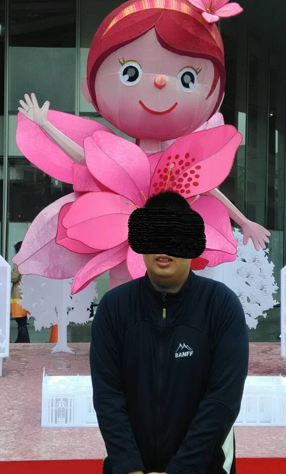
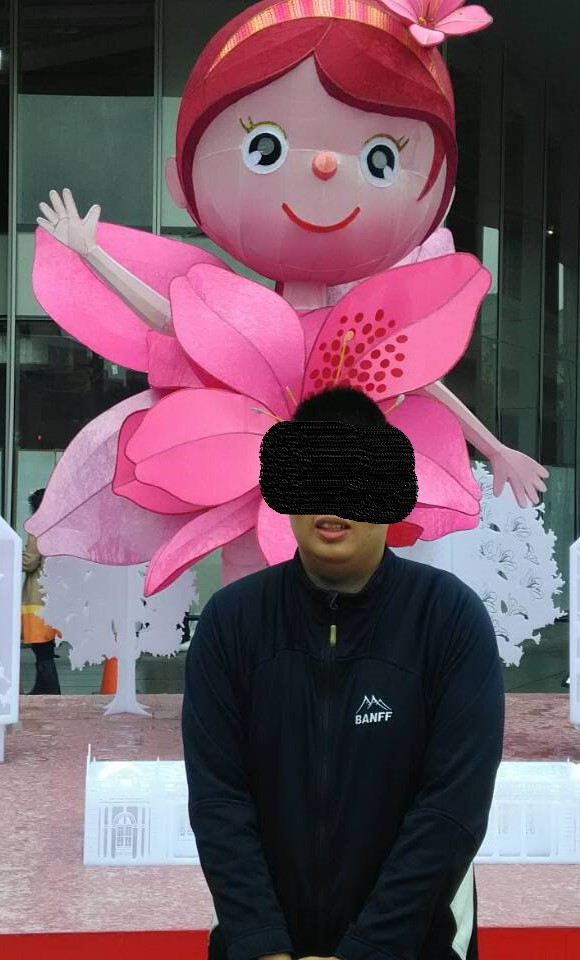

一個大三的宅男,就讀銘傳大學中文系。之所以會想架構蘇東坡的網站,是因為自己之前有借了一本蘇東坡的書(康震的《康震評說—蘇東坡》一書,我覺得這本書編寫的很生動、很活潑,把蘇軾的生平寫得很有故事性;但仍有寫的不對的地方和錯字。)且對於蘇東坡生平,我有比較深的印象。因此,就決定架構關於他的網站了。
但大三有不少的課業壓力要忙(不是要趕這個報告,就是那個報告還沒有做完,真的累),也要準備考試。當然,自己也有自己的生活安排要做。因此,我所架構的這個網站或有隨便帶過之處,尚請見諒。
關於我本人

一個大三的宅男,就讀銘傳大學中文系。之所以會想架構蘇東坡的網站,是因為自己之前有借了一本蘇東坡的書(康震的《康震評說—蘇東坡》一書,我覺得這本書編寫的很生動、很活潑,把蘇軾的生平寫得很有故事性;但仍有寫的不對的地方和錯字。)且對於蘇東坡生平,我有比較深的印象。因此,就決定架構關於他的網站了。
但大三有不少的課業壓力要忙(不是要趕這個報告,就是那個報告還沒有做完,真的累),也要準備考試。當然,自己也有自己的生活安排要做。因此,我所架構的這個網站或有隨便帶過之處,尚請見諒。